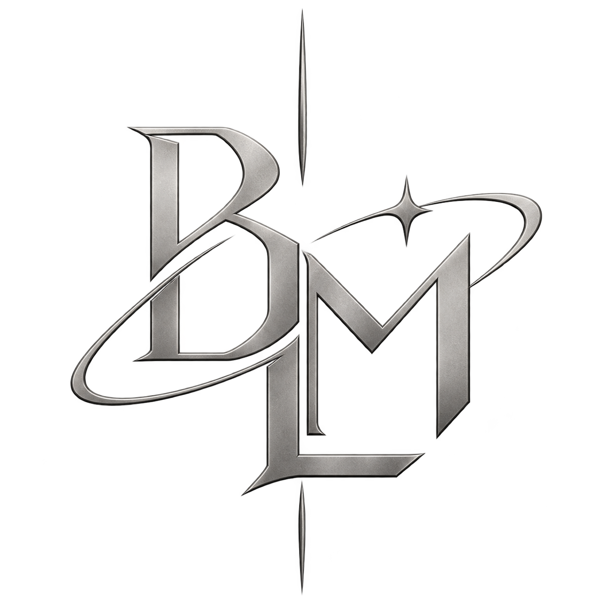
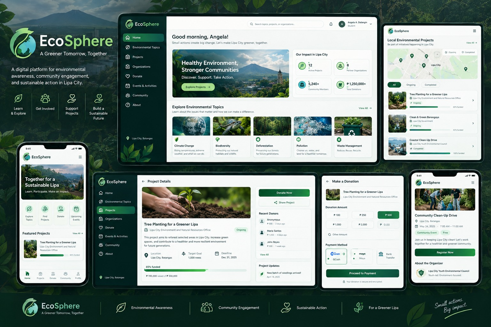

IT & Systems Support
Interested in technical troubleshooting, software support, and keeping digital systems organized and usable.
TECHNICAL INTEREST
BENEDICT L. MOLINYAWEIT SUPPORT · SERVICE MANAGEMENTPERSONAL HOME PAGE · HIRE ME
I'm Benedict L. Molinyawe, a third-year BS Information Technology student majoring in Service Management at Batangas State University.
I’m building my skills in IT support, information systems, data handling, and technical problem-solving—with a focus on dependable service and clear documentation.
01 / INTRODUCTION
I’m an aspiring IT professional who values accuracy, organization, and helpful service.
As a BSIT student majoring in Service Management, I’m interested in how technology and well-organized information help people and organizations work more effectively. My SPES experience gave me practical exposure to data encoding, records management, digital archiving, and administrative support.
I want to keep developing my technical abilities and contribute to a team where reliability, communication, and continuous learning matter.
02 / SKILLS & STRENGTHS
Skills and strengths I’m building through my studies, project work, and practical experience.
Interested in technical troubleshooting, software support, and keeping digital systems organized and usable.
TECHNICAL INTERESTExperience entering, validating, organizing, filing, and retrieving records with attention to accuracy.
PRACTICAL EXPERIENCEAcademic project experience with Flask, SQLAlchemy, and SQLite through a web-based environmental platform.
PROJECT EXPERIENCEAdaptability, attention to detail, time management, willingness to learn, and a service-focused mindset.
CORE STRENGTHSI’m continuing to develop the practical knowledge required for helpdesk support, operating systems, networking, and system administration.
03 / BACKGROUND
Building a foundation in information technology, service delivery, and information systems.
Completed senior high school education.
SPES Certificate of CompletionDOLE / LGU
Academic Honor RecipientThe Mabini Academy
Work Ethics & Data Handling TrainingCapitolyo
04 / FEATURED PROJECT

A Web-Based Environmental Awareness and Fundraising Platform for Sustainable Action in Lipa City
EcoSphere is designed to connect environmental awareness with local sustainability initiatives. It brings together structured environmental topics, local project information, active and completed initiatives, and fundraising opportunities to encourage community participation.
Environmental information is available online, but communities need a more organized, localized way to connect awareness with real projects and participation.
05 / CONTACT
I’m open to learning opportunities, professional conversations, and entry-level opportunities that help me grow in IT support and service management.